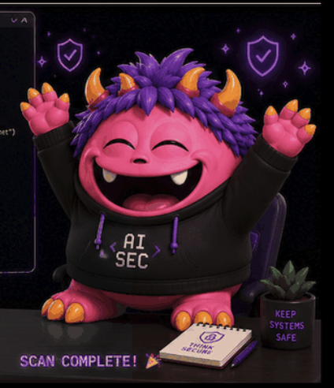

Deterministic field mapping, a required human approval gate, and a mascot who actually eats your bad data.

Field mapping is a guess.
A vendor sends cust_id, full_nm, email_addr — someone eyeballs it against your schema and hopes.
PII sits in plain view.
Raw emails and phone numbers show up in review screens nobody meant to expose them on.
Nothing is remembered.
The same vendor's next file gets mapped from scratch, again, by whoever's on call.
// every step below is a real API call against a real vendor SDK — nothing here is mocked
Each row gets chomped, validated, and sorted live — straight into the modern database or the quarantine bin, one chip flying at a time.
Every suggested mapping needs an explicit decision — tracked as two separate flags per field, not one dropdown. Reject a column and it's excluded from the run entirely, no matter what's still selected.
Stores and recalls mapping memory across migrations.
Real ingest + semantic search over migration history.
Live SQL profiling on their DataFusion engine, one query.
Hosted AI pipeline — the LLM call runs on their infra.
The real rote CLI — authenticated identity.
Real CLI dependency vulnerability scan.
Drafts every field-mapping suggestion.
PII Masked
Previews never show a raw email or phone number.
Source Read-Only
The vendor's file is never mutated, only read.
Human Approval Required
No silent auto-migration — ever.
Load dropped files straight into HotData through a RocketRide-hosted pipeline.
Deterministic replay of a known mapping via Modiqo Rote.
Multi-file, multi-vendor batch migrations in a single run.
PROTAGEOPS